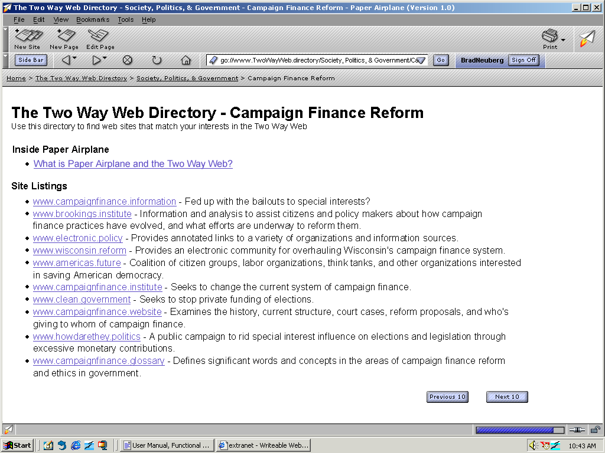
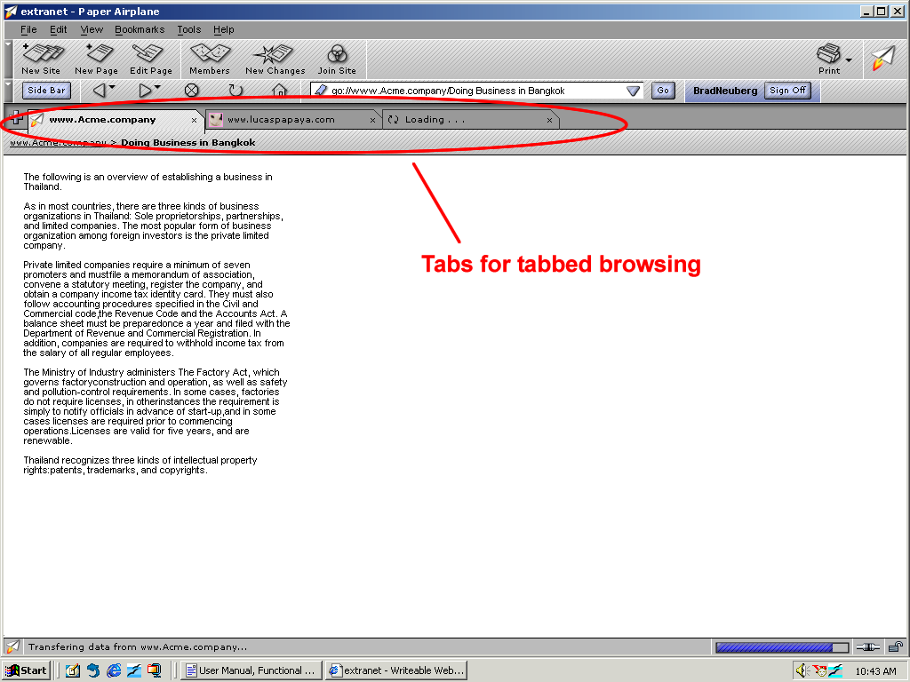

| | |
Table of Contents | Last | Next
Browsing - Navigating Web Pages
The Two Way Web Directory is the default homepage for Paper Airplane, and is shown when the browser is first started. Quickly find Two Way Web Sites that match your interests using The Two Way Web Directory:

The Two Way Web Directory
To use the directory:
1.Choose a major category first, such as Lifestyles or Sports.
2.Choose a sub-category:

Sub-Categories in Society, Politics, and Government
Pages in the sub-category are displayed in groups of ten:

Campaign Finance Reform Sub-Category
Press the Next 10 and Previous 10 buttons to page between results.
Individual results are shown on the page as they are retrieved from the network; you do not have to wait until all ten results have been loaded until the page is displayed. Results are not shown alphabetically, but are instead shown as they are dynamically retrieved from the Two Way Web. The Previous 10 button merely displays the cached previously shown ten results; if no results have been viewed yet then the Previous 10 button is disabled.
To add your Two Way Web Site to the directory, simply choose a category and sub-category while using the New Site Wizard or use the File | Page Properties dialog.
Note: There is currently no way to add custom categories or sub-categories to the Two Way Web Directory.
Compatibility with the Older World Wide Web
Paper Airplane is built to replace Internet Explorer, Mozilla, and Netscape. It is fully compatible with browsing the existing World Wide Web, so you can rest assured that you can still view your existing news, entertainment, and information sites using Paper Airplane.
To view an older World Wide Web Site simply enter its web address into the Address Bar, just as you would in Internet Explorer or Netscape.
Important Note: Older web browsers, such as Netscape and Internet Explorer, can not access the Two Way Web. Users must use the Paper Airplane browser to visit and edit Two Way Web Sites. This is due to the fact that the underlying architecture of the Two Way Web is radically different than the existing World Wide Web.
Viewing and Changing Your Home Page
The Two Way Web Directory appears automatically in the browser window when you first launch Paper Airplane. This page provides a standard directory of all the web sites in the Two Way Web.
Until you specify otherwise, this page is your home page. At any time you can return to your default home page by pressing the Home Page button:

The Hone Page Button
To specify your home page:
You move to a new page by typing its URL—its location (address) on the Web. URLs normally begin with the abbreviation http:// followed by one or more names that identify the address. For instance, http://netscape.com. Paper Airplane introduces a new type of URL, go://, for Two Way Web Sites. For instance, go://www.greenpeace.environment or go://www.nike.laborpolicy. If you omit the go:// or http:// portions of the address, Paper Airplane will automatically figure out how to retrieve the requested web-site.
To move to a new online address:
1. Click the Address Bar to select the URL that is already there.
2. Type the URL of the page you want to visit. The URL you type replaces any text already in the Address Bar.
3. Press Enter.
Tip: To quickly select the URL in the Address Bar, press Ctrl+L.
Address Bar
Tip: You don't have to type in the file-extension .page for Two Way Web Pages. For example, to reach the Two Way Web Page Doing Business in Bangkok you could type either of the following into your browser:
The Paper Airplane browser will automatically assume the file-extension .page for Two Way Web pages. If you save a Two Way Web Page onto your hard-drive the .page extension will automatically be added to maintain compatibility with your file-system.
Most web pages contain links you can click to move to other pages.
If you press the right button on your mouse, the following pop-up menu will appear:
Right-Click Menu for Links
The following options are available from the right-click popup menu:
There are several ways to re-visit pages:

The Browser Bar
To see a list of any URLs you've typed into the Address Bar, click the arrow at the right end of the Address Bar. To view a page, choose it from the list.
To choose from pages you've visited during the past several sessions, open the View menu and choose History. This will show you the history list window. The history list displays a list of folders. Double clicking the folders displays subfolders or bookmarks to web pages. You can double-click the URL next to the Bookmark icon to view that page.

History Window
Tip: The Sidebar History tab also allows you to choose from pages you've visited during the past several sessions:

History Panel in Sidebar
About History Lists
The history list contains links to recently visited pages. The Location column contains links to pages you've typed into the Address Bar and then visited.
To access the history list from Paper Airplane, open the View menu and choose History. To access the Address Bar list, click the arrow at the right end of the Address Bar.
Tip: To quickly open the history list, press Ctrl+H.
If you don't want the Address Bar or history list to display the pages you've been visiting, you can clear the history list and Address Bar history entirely or selectively.
To delete all pages from the Address Bar or history list, begin from the Paper Airplane window:
1.Open the Tools menu and choose Program Settings.
2.Under the Browser category, click History. (If no subcategories are visible, double-click the category to expand the list.)
3.Click Clear History and Clear Address Bar to remove all previously visited web pages from the lists.
4.If you wish to set a limit on how many pages remain in the history list, click the field next to "Number of pages in session history" and type a number of pages.
To selectively delete pages from the history list, do any of the following:
Tip: To sort the history list, click one of the categories (Title, Location, or Last Visited). Click the title again to reverse the order.
If a page is taking too long to appear click the Stop button:
The Stop Button
To refresh the current page, or get the most up-to-date version, click Reload:
The Reload Button
The addresses, or URLs, of web pages can be quite long and difficult to remember. Fortunately, it's not necessary to memorize URLs in order to browse the Web. Your browser has a list of bookmarks, which are pointers to interesting web pages.
To go to a bookmarked page, begin from the Paper Airplane window:
Tip: To retrace your steps, click the Back arrow:
The Back Button
You can save your own bookmarks to point to pages you frequently visit, or to other interesting places on the Web. See Creating New Bookmarks for more information.
There are two ways to view more than one webpage simultaneously. The method most familiar to many people is opening a complete new browser window. The second way to accomplish this is to use a new feature available in Paper Airplane named Tabbed Browsing. You are now able to open sub-windows or "tabs" within a single window:

Tabbed Browsing
To open a new tab, press Control T or open the File menu and choose New Browser Tab. You will now see a second "tab" next to the original window you had open. Type in an address, such as www.CodingInParadise.weblog in the location bar above the tab, to have the website corresponding with that website open in the open tab. Easily browse all of your favorite sites without opening new, intrusive windows.
To browse in Full Screen Mode, either choose View | Full Screen or press F11. Full Screen Mode will expand the current web page to fill your screen,
To exit Full Screen Mode either press the X in the upper-right corner of the screen or press the F11 key again.
The source code for World Wide Web pages can easily be viewed within the browser. To view either, select the View menu followed by Page Source.
Tip: You can press Control-U to quickly open the View Source window for a page.
Important: The view page source function is disabled for Two Way Web Pages, which are currently in a binary format rather than a textual one such as HTML or XML.
The Sidebar is an integral part of Paper Airplane. When visiting a Two Way Web Site, special panels will appear that make it easy to find out about site members and learn about any recent changes that have occured to the site:
|
Members Panel in Sidebar |
New Changes Panel in Sidebar |
Search Panel in Sidebar |
Bookmarks Panel in Sidebar |
History Panel in Sidebar |
The Members and New Changes Panels disappear for older World Wide Web Sites that don't support this functionality.
To show and hide the sidebar, you can press the Sidebar button located in the Browser Bar:

The Sidebar Button
Tip: You can quickly open and close the Sidebar by pressing the F9 button.
Note: It is not currently possible to add and remove tabs to the Sidebar, as in Mozilla or Netscape.
Paper Airplane provides a cookie trail that constantly informs the user where they are in the current web site:

Cookie Trail
Users can press the hyperlinked web address, such as www.Acme.company in the example above, to instantly jump to the top of the current web site. If older World Wide Web Sites support the cookie trail functionality then a full, deep trail will be displayed:
Cookie Trail for Older World Wide Web Site
Setting an Image as Your Background
To set an image that is displayed in your browser as your desktop's wallpaper, simply press the right-button on your mouse on the desired image and select Set as Wallpaper:
To make the text on the web page you are reading either larger or smaller, select the View pull-down menu. Next, select the Text Zoom sub-menu. This sub-menu will reveal the following choices:
You can choose to simply make the text either the next available larger or smaller size by choosing Smaller or Larger, respectively. You can also manually set the size of the text by choosing a percentage, such as 50% or 120%.
Note: The text on Two Way Web pages can not be zoomed larger or smaller at this time. Only older World Wide Web pages can have their text sizes changed.
To send a page by email select the File pull-down menu and then choose Send Page.... This will bring up a message window using the email program you have set up as your email helper application. You can also press the right mouse button on a web page or web link to send that web page or hyperlink.
Tip: To change the default email application used by Paper Airplane, first select the Tools pull-down menu, followed by the Program Settings... option. This will bring up the Program Settings... dialog window. Next, choose the Browsing category followed by the Email & Newsgroups sub-category in the Program Settings... dialog window. Finally, press the Browse button in the area titled Use the following Email Program to locate where your email program is on your hard-drive.